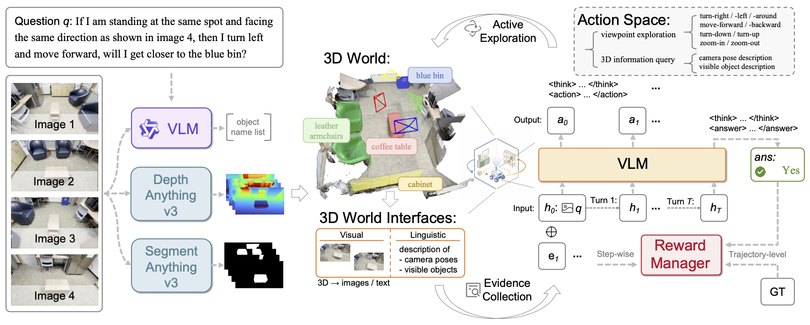
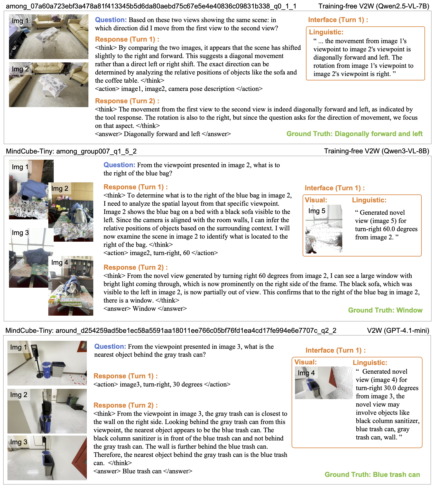
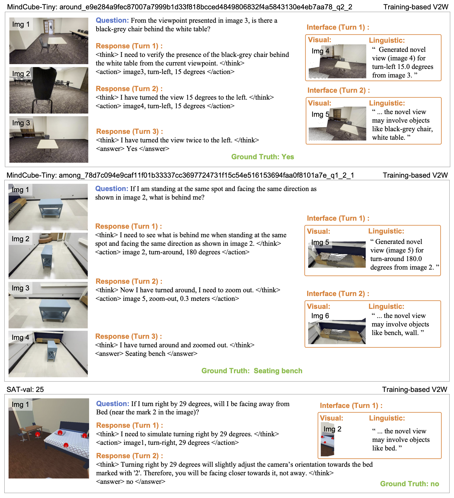

From Views to Worlds: Active Exploration over 3D Worlds for Vision-Language Models
Abstract
Vision-language models (VLMs) have achieved remarkable progress in 2D visual understanding tasks, yet the passive view-centric perception paradigm limits their capacity for 3D spatial reasoning. Such reasoning often requires actively acquiring spatial evidence beyond the currently visible views, such as camera poses and cross-view spatial relationships, to infer 3D relationships that are not explicitly represented in 2D images. However, existing methods either lack active exploration or merely provide additional views during inference, without explicitly acquiring such spatial evidence beyond 2D images. In this paper, we propose View-to-World (V2W), an active exploration framework that enables VLMs to actively explore 3D worlds and lifts VLMs from passive view-centric perception to active world-centric spatial reasoning. Given a spatial reasoning task with multi-view images, V2W first reconstructs an explicit 3D world with geometry, camera poses, and language-grounded semantics, and exposes it to VLMs through visual and linguistic interfaces. Through multi-turn interaction with these interfaces, VLMs iteratively acquire spatial evidence from the constructed 3D world, enabling active world-centric spatial reasoning. V2W can be integrated with existing VLMs in a training-free manner and can be further enhanced by optimizing the exploration policy via reinforcement learning. Experiments on spatial mental modeling benchmarks demonstrate that V2W substantially improves VLM baselines in the training-free setting and achieves state-of-the-art performance with the learned exploration policy, highlighting the importance of active exploration for spatial intelligence.
Method
Overview of the View-to-World (V2W) framework. V2W constructs a VLM-compatible 3D world from multi-view images. The 3D information is exposed through visual and linguistic interfaces, enabling the VLM to actively explore the world via multi-turn interaction, and the exploration policy can be further optimized via reinforcement learning.

Case
Training-free Exploration
Existing VLMs acquire spatial evidence through active exploration without additional training.

Learned Exploration Policy
Reinforcement learning enhances the VLM’s active exploration capability, enabling more effective multi-step exploration and aggregation of spatial evidence.

BibTeX
@article{tian2026views,
title={From Views to Worlds: Active Exploration over 3D Worlds for Vision-Language Models},
author={Tian, Qijian and Ying, Jiayu and Fan, Ke and Ma, Lizhuang and Tan, Xin},
journal={arXiv preprint arXiv:2610.24676},
year={2026}
}